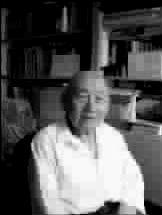

最好的注脚
●丁建峰
何兆武先生是我敬慕的前辈哲人，他译的《思想录》《西方哲学史》等名著文字优美，功力与学思并臻上乘，嘉惠了不知几多学子。最近，由何先生口述、文靖整理的回忆录《上学记》出版，更是当代读书人的幸事。
何先生是历史学家，他回顾了自己从小学到大学的求学历程，“讲古”顺畅明晰，要言不烦，话语清澈如水，味淡而隽永。这不是那种“闲坐说玄宗”式的一味慨叹，而是通过对民国时期学校教育的生动描绘，揭示出了很多值得我们思考的东西。
我最喜欢的，是书里描写的国立西南联合大学的读书生活。那时的环境艰苦异常，可是为什么能出现如此之多的大师级人物呢？何先生认为，最重要的因素是西南联大自由的学术氛围和教育理念。那时，没有标准教科书，考试也没有“标准答案”，“联大老师讲课是绝对自由”。
例如，当时教《政治学概论》的周世逑先生第一节课上，就批评“国父”孙中山对“政治”的经典定义——“管理众人之事”。周先生说：“这个定义是完全错误的，你们在食堂吃饭，有人管伙食账；你们借书，有人管借书条；你们考试，注册组要登记你们的成绩。这些都是众人之事，但它们是政治吗？”冯友兰在课堂上骂胡适：“胡适到二七年就完了，以后再没有东西了，也没起到多大的作用。”何先生当年在建筑系就读，但为了听陈寅恪的课，不惜和高年级的同学挤在窗下“偷听”。他不要学分，旁听了张奚若的《西洋政治思想史》，深受启发，“乃至于现在的专业也变成思想史了”。
联大对学生的管理是极宽松的，“没有任何组织纪律，没有点名，没有排队唱歌，也不用呼口号，早起晚睡没人管，不上课没人管，个人行为非常自由。”正是这种“自由”甚至“散漫”的学术氛围，才培养了学生的“独立之精神”，激发了学生的求知欲；同时，教师也能够在宽松的环境中发挥想像力和创造力。
这是西南联大的生命之源，成就之基。
有些人也许会质疑：这么自由散漫，不是乱套了吗？其实，恰恰是这种表面上的“乱”，蕴含着人类最完美的秩序，整齐划一反倒是思想的大敌。亚里士多德在《形而上学》一书中开宗明义提出，求知是所有人的天性。只要没有外力的阻挠，让少年学子自己选择最感兴趣的方面去发展，并提供较适宜的人文条件，就会结出丰硕的知识之果。当然，思想自由、学术自由不但要有制度保证，还要有一种信任与爱的氛围。何先生在书中介绍，当时的学生持有各种政见，经常吵得不可开交，但“后来的关系依然很好”。这是宽容的精神。学生可以随意到图书馆里浏览书籍，不用排队，不用填借书条，这体现了信任的精神。何先生本人的话语也充满了忠恕之道，他写冯友兰，写钱穆，都毫不隐讳地指出其缺点，但语气平和，绝无讽刺谩骂之嫌。忠，是真诚的精神；恕，是宽容的精神。胡适先生说，容忍比自由更重要。何先生的书可以作为这句话的最好注脚。
(柴宁摘自《财经》2006年第21期)